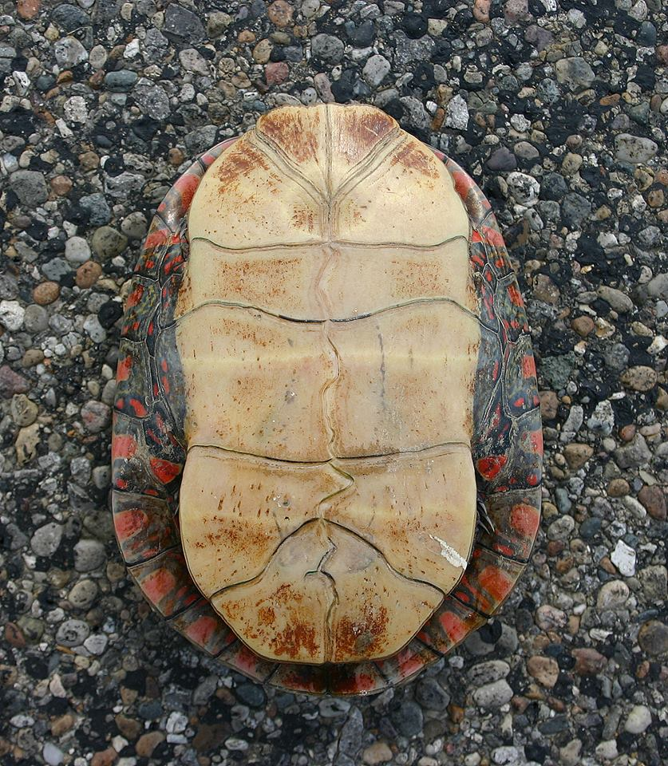

A Python Library for the Fedora API
Joshua Westgard
June 6, 2018
Python Library and Client for the Fedora API
- Made possible by the written specification of the Fedora API
- Originated in a one-off batch loader for testing fcrepo
Plastron
- UMD batchload client is called plastron
- Name is for the underside of a turtle's shell
- Relates to both Diamondback Terrapin and Archelon Application
Image credit: User Ptarp, available at https://en.wikipedia.org/ wiki/Turtle_shell#/media/ File:Painted_Turtle%27s_Plastron_ %22belly_shell%22.jpg
Purpose
- Lightweight loader for Fedora
- Fills a gap between curl scripts and full application
- Fedora Import/Export does not load new content
- Can also be used to update repository assets
- Classes for repository API and PCDM could be used separately
Core Concepts
- Data handler
- Item vs. component
Handlers
- Turtle
- National Digital Newspaper Program XML
- CSV handler is planned
Features
- Repository and batch configuration files
- Support for basic and certificate authentication
- Configurable logging
Examples
./plastron -r fcrepo_local.yml load -b diamondback.yml
Examples
./plastron -r fcrepo_local.yml list -R 'pcdm:hasMember,pcdm:hasFile' http://localhost:8080/rest/foo
Features (continued)
- Transactions by item
- Resumability
- Partial loads (limit/percent/dryrun)
Results
- Did require tuning our ecosystem
- Certain bugs were surfaced in Fedora
- With fixes in place, both Fedora and the loader are performant
Future Plans
- Make handler creation easier by moving complexity into reusable core
- Release core API & PCDM classes as their own package?
Please try it out
- http://github.com/umd-lib/plastron
Thank you!
Joshua Westgard (westgard@umd.edu)
/